Reporting Calculations
The lion’s share of this book, thus far, has focused on Calculations that result in data being stored in the Cube. Writing data to any multidimensional database requires care and precision and is not very forgiving of mistakes. But not all Calculations need to result in stored Cube data. Sometimes referred to as Dynamic Calcs, reporting Calculations are generally simpler in how they are written and allow greater flexibility since data is not written back to the Cube.
Dynamic Calculations encompass all Calculations where the result is determined in-memory and displayed to the User via a Report, like a Cube View. Dynamic Calcs work fundamentally differently from the stored Calculations discussed so far. This chapter will cover the When, Where, and How of reporting Calculations.
Reporting Calculations
When They Run
Unlike stored Calculations, dynamic Calculations do not need to be explicitly executed via the DUCS or a Data Management step. Rather, they will run anytime they are referenced, most commonly when opening a Report like a Cube View or Quick View. If a Report contains references to dynamic Calculations, then the formula logic will be processed in memory as OneStream renders the Report on the screen. Dynamic Members can also be referenced in stored Calculations via Business Rules and Member Formulas using the api.Data.GetDataCell function.
Aside from Cube View and Quick View Reports, dynamic Calcs will not execute in most other places in OneStream where data is processed. This includes:
Data Exports via Data Management Export Data step
Data Buffers
Data Unit Method Queries
Reporting Calculations
Dynamic Calculation Example
Let’s start with a simple example of a dynamic Calculation that calculates the gross profit percentage of Sales.
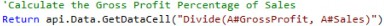
How and where they are written – and the required syntax – is a bit different for stored Calculations than for dynamic Calculations. Let’s dive in further, using the above example as a reference.
Reporting Calculations
Where They are Located
Just like stored formulas, there are options for where dynamic Calculation Scripts can be stored.
Reporting Calculations › Where They are Located
Member Formulas
Dynamic Calculation formulas can be stored in the Member Filter Property on Account, Flow, and UD Dimensions. To enable Dynamic Calculations on a Member, the Formula Type Member property should be set to DynamicCalc. For Account Members, both Account Type and Formula Type need to be set to DynamicCalc.
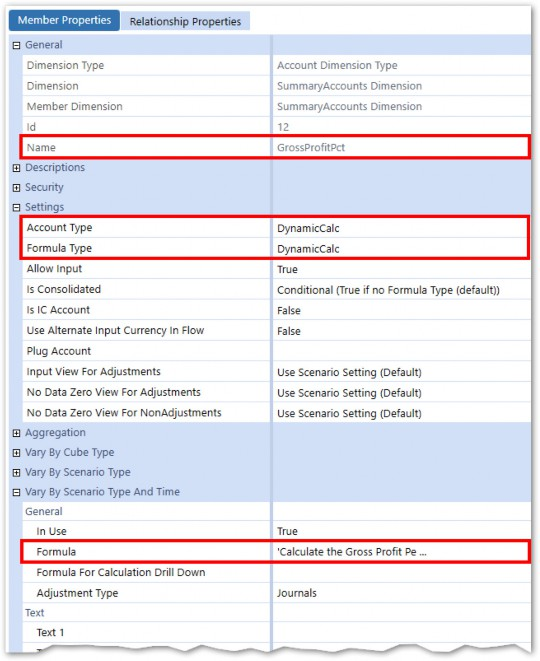
Figure 5.1
Just like for stored Calculations, the formula can vary by Time and Scenario Type.
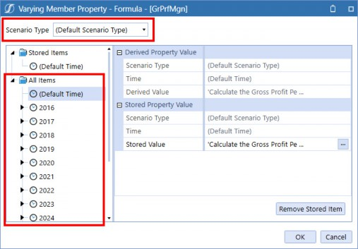
Figure 5.2
When storing the dynamic formula logic on a Member Formula, the formula will run anytime that Member is referenced, e.g., in a Cube View.
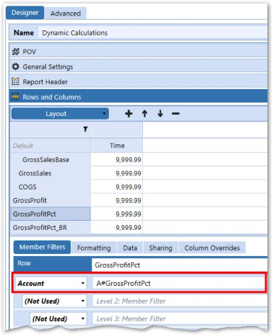
Figure 5.3
Reporting Calculations › Where They are Located
Dynamic Calculations in Business Rules
Dynamic Calculations can be stored in Business Rules using the FinanceFunctionType of
DataCell.
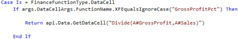
DataCellArgs are used to declare a FunctionName which is referenced when called. The Business Rule is then called from a Cube View using the below syntax:
GetDataCell(BR#[BRName=Chapter5Examples, FunctionName=GrossProfitPct]):Name(Gross Profit % - BR)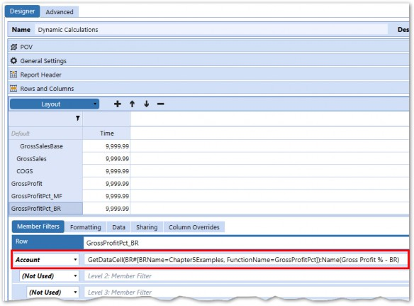
Figure 5.4
| Note: Square brackets [ ] must be put around the syntax that comes after BR#. |
Reporting Calculations › Where They are Located › Dynamic Calculations in Business Rules
Benefits/Drawbacks
The main benefits of using Business Rules to store Dynamic Calculations is that they are not assigned to a specific Dimension and can leverage Name Value pairs (described later), which can make them more flexible.
The downside is that a data cell Business Rule cannot return textual data. Also, the syntax to call them is slightly more complex than if the same logic was stored in a Member Formula.
Reporting Calculations › Where They are Located
Cube Views
GetDataCell functions can also be used directly in Cube Views.
GetDataCell(Divide(A#GrossProfit, A#Sales)):Name(Gross Profit % - CV)
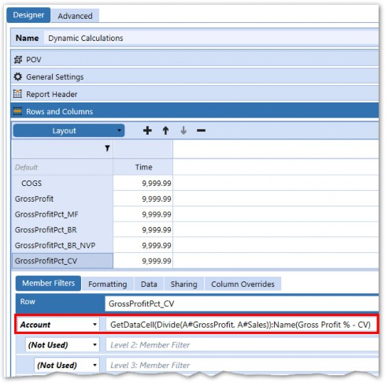
Figure 5.5
Reporting Calculations › Where They are Located › Cube Views
Benefits/Drawbacks
The advantage to using the GetDataCell function directly in a Cube View is that substitution variables and Column/Row math can be used.
Substitution Variable: GetDataCell(“S#Actual:T#[YearPrior1(|CVTime|)] – T#Actual”)
Column/Row math: GetDataCell(CVC(SomeColumnName) - CVC(SomeOtherColumnName))| Note: Nested functions inside a GetDataCell should be wrapped in square brackets [ ]. |
The downside of using GetDataCell(s) in Cube Views is that the logic cannot be referenced in other Cube Views, making this Method less maintenance-friendly. In addition, GetDataCell cannot be used in the Excel Add-in or Spreadsheet tool, so it is usually better to store the logic in a Member Formula or Business Rule so that it can be used universally.
Reporting Calculations › Where They are Located
Results
All the Methods described to calculate the gross profit percent of Sales yield the same results.
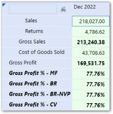
Figure 5.6
Reporting Calculations
How They Work
In Chapter 2, we compared the OneStream Calculation Engine to Excel and said that Calculations do not work on a cell-by-cell basis (like they do in Excel) but rather in groups of cells called Data Buffers. While this is certainly true for stored Calculations, this does not apply to dynamic Calculations. Dynamic Calculations work on the individual data cell level, rather than at the Data Buffer level which more closely mirrors the way Excel works.
Reporting Calculations › How They Work
Cell POV By Cell POV
Let’s look at dynamic Calculations in the context of the most common reporting mechanism in OneStream – the Cube View. Cube Views comprise of rows and columns which – together – form a data grid made up of data cells. As the data grid is processed, each cell is analyzed and processed. As it renders the data cells in the grid, each cell is either retrieved from storage or dynamically calculated in memory.
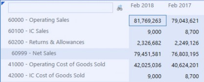
Figure 5.7
The above Cube View has 6 rows and 2 columns for a total of 12 data cells. Each one of these data cells has a full 18-Dimension POV that results in one data point or number. The POV is very important when writing and running dynamic Calcs since the Calculation will inherit the POV of each Cube View cell. This means the same dynamic Calculation can produce different results depending on the Cube View (or other reporting mechanism) in which it is referenced.
Reporting Calculations › How They Work › Cell POV By Cell POV
Retrieving POV Members
Since each cell in a Cube View has a full 18-Dimension POV, the api.Pov Method can be used for any Dimension, not just the Data Unit Dimensions (which is the case for stored Calculations).
This is useful when needing to vary the Calculation logic for certain Members or can prevent the Calc from running on some cells (which can help Report performance).
The below example varies the Calculation logic based on the UD1 for each data cell.
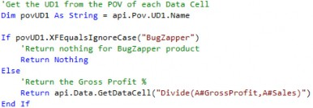
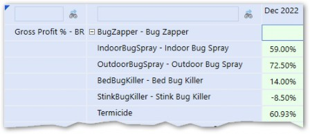
Figure 5.8
| Note: For logic statements with many conditions, a Case When statement performs better than an If Statement. |
Reporting Calculations › How They Work › Cell POV By Cell POV
Return
Dynamic Calcs require a Return statement followed by an object to be returned. The object that is returned can either be numerical or textual data, depending on the View Member of the data cell being processed.
View Members for displaying numerical data:
YTDPeriodicQTDMTDHTD
View Members for displaying textual data:
AnnotationAssumptionsAuditCommentFootnoteVarianceExplanation
Most dynamic Calculations return numerical data; however, having the ability to display textual data alongside numerical can be very useful. Let’s explore how to display both numerical and textual data and later go through an example of displaying both in a technique called Relational Blending.
Reporting Calculations › How They Work › Cell POV By Cell POV › Return
Numerical Data
The simplest example for displaying numerical data in a dynamic Calculation is returning a constant, (e.g., 123.4).
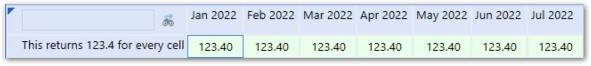
Figure 5.9
While this is easy and illustrates a simple example, it is not very useful. A better and more commonly used approach is to return a data cell using the api.Data.GetDataCell function.
Reporting Calculations › How They Work › Cell POV By Cell POV › Return › Numerical Data
Api.Data.GetDataCell
We’ve already seen the GetDataCell function used within a Data Buffer Cell Loop to retrieve a data cell’s Cell Amount from the Cube. When used in Stored Formulas, a full Member Script of all Account-level Dimensions must be defined. When used in dynamic Calculations, a minimum of one Dimension can be defined with the rest of the Dimensions inherited from the Report settings.
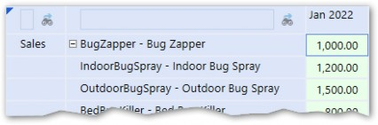
Figure 5.10
When referenced in a Cube View, the script returns multiple data cells, all with A#Sales in their Member Script. The other Dimensions are defined in the properties of the Cube View.
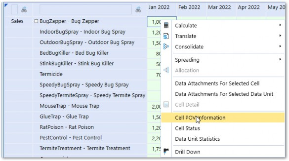
Figure 5.11
Figure 5.12
The above example is again trivial as there would be no need to write a dynamic Calculation to return A#Sales; however, it illustrates how other Dimension Members are applied to the dynamic Calculations script from the underlying Report.
Reporting Calculations › How They Work › Cell POV By Cell POV › Return › Numerical Data
Api.Data.GetDataCell with a Formula
GetDataCell’s use is often expanded to perform math operations on multiple data cells.
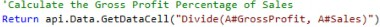
Just like the api.Data.Calculate function, each operand within the formula is defined by a Member Script. A key difference, however, is that the GetDataCell function does not perform Data Buffer math like the ADC function. Math is performed cell by cell with each Member Script resulting in a singular data point.
Reporting Calculations › How They Work › Cell POV By Cell POV › Return › Numerical Data
Data Cell Properties
The GetDataCell function returns a data cell object which has several properties associated with it.
CellAmount– The Data Cell Amount as a decimalCellAmountAsText– The Data Cell Amount as a stringCellStatus– The Cell Status as a DataCellStatusobject (can be converted to a string)
DataCellPk– The data cell Primary Key as a DataCellPkobject
Get/SetDimension names – Functions that retrieve or set a Dimension name to the data cell
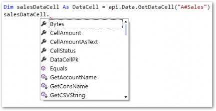
Figure 5.13
When using the GetDataCell object in dynamic Calculations, only the data cell object needs to be returned. An implicit conversion to a decimal will occur when rendering the data cell object on the Cube View. The CellAmount property can also be returned but will display zeros as actual 0s on the Report (instead of blank cells). For this reason, it is best to return the data cell object.
The CellAmount property is mostly used when utilizing the GetDataCell function in a stored Calculation, as we did in the Data Buffer Cell Loop example in the last chapter.Reporting Calculations › How They Work › Cell POV By Cell POV › Return › Numerical Data
Time Functions and Substitution Variables
Time functions can be used within the Member Scripts used in formulas in GetDataCell functions.
Reporting Calculations › How They Work › Cell POV By Cell POV › Return
Textual Data
Textual data can also be displayed on a Report when using the Annotation-type View Members listed below:
AnnotationAssumptionsAuditCommentFootnoteVarianceExplanation
The simplest example is returning a string.
Figure 5.14 shows the text string Hello returned only for Annotation-type View Members.
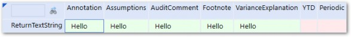
Figure 5.14
Reporting Calculations › How They Work › Cell POV By Cell POV › Return › Textual Data
DataCellEx
The DataCellEx object is like the DataCell object but has several properties which allow it to return some additional information about the data cell.
A DataCellEx object has the below properties associated with it:
AccountTypeID– the Account Type ID of the data cell’s Account Member.CurrencyID– the currency ID of the data cell’s Entity Member.DataCellAnnotation– any text stored in the data cell’s Annotation-type View Member.DataCellDetail– information regarding cell detail (if available) entered for this cell. This property has additional properties related to cell detail, such as line items and cell view type.
The following example checks the View Member of each data cell and returns either a text string or decimal constant, depending on whether the View Member is an Annotation-type.
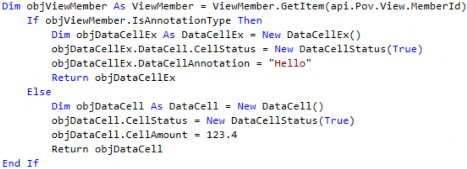
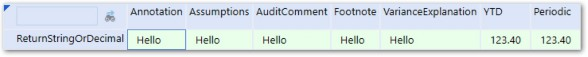
Figure 5.15
Reporting Calculations › How They Work › Cell POV By Cell POV › Return › Textual Data
Return Text Properties
Another common application of using dynamic Calculations to return text is to display text properties associated with Dimension Members. Let’s go through an example:
Moe, Larry, and Curly have decided to divide the management of all the Products sold by StoogeCorp amongst themselves. When looking at a Sales Report for all Products, they want to also see the name of the product manager in the first column next to the Product name. Larry decides that they will store the name of the product manager in the Text1 property of the Product Member.
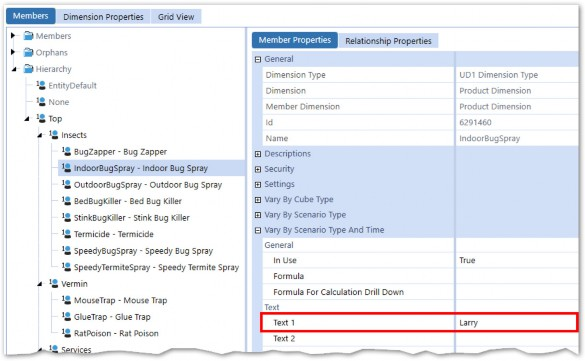
Figure 5.16
A UD8 dynamic Calculation Member is created with a formula to retrieve the Text1 property of the Product in the POV.
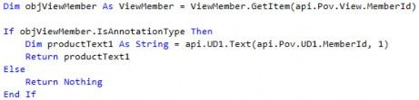
The first column of the Sales Report references the UD8 Member with the Annotation View Member.
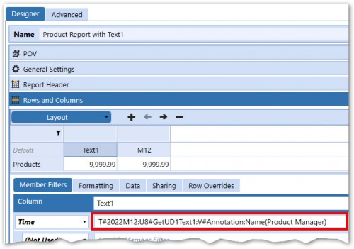
Figure 5.17
The first column shows the name – from the Product in the row’s Text1 property – in the first column.
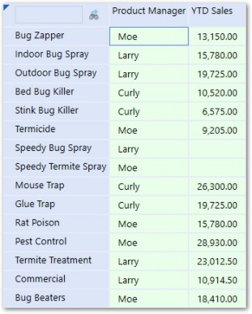
Figure 5.18
Reporting Calculations › How They Work › Cell POV By Cell POV
Name Value Pairs
When calling a dynamic Calculation from a Business Rule, Name Value pairs can be used to pass values from the Cube View to the Business Rule. The advantage is that the logic of the Business Rule can change, based on the value passed into the rule, which makes the Business Rule more versatile.
Name Value pairs can be defined and brought into the Business Rule via args.DataCellArgs.NameValuePairs. After setting the Name Value pair equal to a string variable, the variable can be interpolated into the formula of the GetDataCell function.
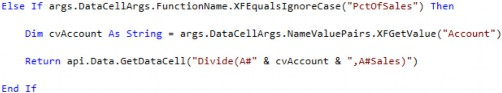
The Name Value pair is then defined in the Cube View when calling the Business Rule and function name.
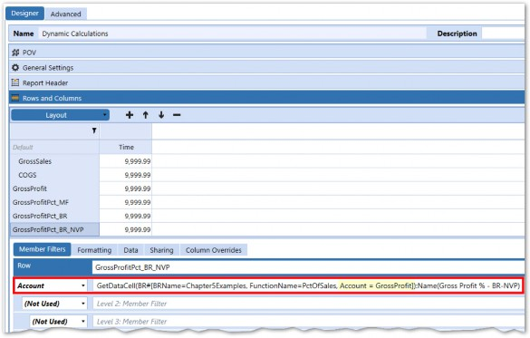
Figure 5.19
The PctOfSales function can now be reused with different values passed in via the Name Value pairs to make the function more versatile.
Reporting Calculations
Functions
Our above example utilized the Divide function, and other math functions are available to use as well. These functions are designed to improve performance and save the Calculation writer time by shortening the formula and – in some cases – providing some built-in error handling. Specifically, the Divide function avoids errors caused when the denominator resolves to zero. Instead, zero values in the denominator are treated as NoData.
Reporting Calculations › Functions
Variance
The Variance function shortens the syntax required to do simple variance percentage math with the same divide-by-zero protection as the Divide function.
Abstract: (A - B) / Abs B Example:
GetDataCell(Variance(S#Actual,S#Budget)):Name(Variance)
Reporting Calculations › Functions
VariancePercent
The VariancePercent is the same as Variance but multiplies the result by 100. Abstract: (A - B) / Abs B * 100
Example:
GetDataCell(VariancePercent(S#Actual,S#Budget)):Name(Var %)
Reporting Calculations › Functions
BetterWorse
Better/Worse (BW) functions calculate a variance, taking the Account Type property of the Account into consideration. Increases in Revenue/Asset Accounts over comparative periods or Scenarios will be displayed as a positive variance, while increases in Expense/Liability Accounts over comparative periods will be displayed as negative variances.
GetDataCell(BWDiff(S#Actual, S#BudgetV1)):Name("BetterWorse Difference")
Reporting Calculations › Functions
BetterWorsePercent
This function expands upon the Better/Worse function described above and calculates the variance as a percent.
GetDataCell(BWPercent(S#Actual, S#BudgetV1)):Name("BetterWorse Difference %")
Reporting Calculations › Functions
But Wait, There’s More
A complete list of these functions is available in the OneStream Design and Reference Guide. There are also examples and samples in the Member Filter Builder.
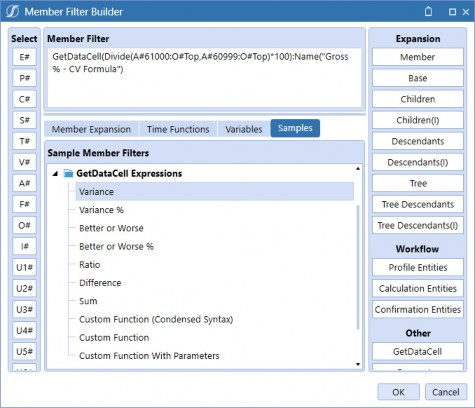
Figure 5.20
There are other more business-specific functions such as api.functions.GetDSODataCell. Days Sales Outstanding (DSO) is a common formula that is a required Calculation for many OneStream applications. Consequently, OneStream has provided a pre-built function to encapsulate the logic required for this function.
Return api.Functions.GetDSODataCell("AcctsRec", "Sales")
Reporting Calculations
Use of UD8
A common technique is to store dynamic Calculations in the UD8 Dimension. The idea is that UD8 is the least-commonly used Dimension, so storing a dynamic Calculation there allows the Calculation to inherit the POV for all other Dimensions from the Report, giving it ultimate flexibility.
To use UD8 to store dynamic Calcs, simply create a Dimension (e.g., ReportingCalculations) and create Members there.
Figure 5.21
Since no data is being stored within the Members of this Dimension, it does not need to be assigned to the Cube. In fact, a different UD8 can be assigned to the Cube, and dynamic Calculations created within both will work.
Reporting Calculations › Use of UD8
UD8 Example
The most common UD8 dynamic Calculation is ‘percentage of Net Sales’. The desired Report would look something like this:
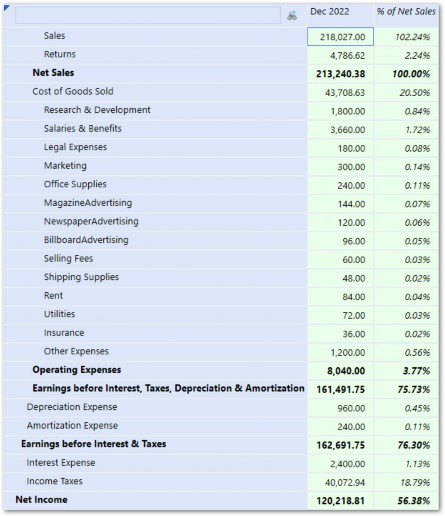
Figure 5.22
The second column of the Report shows the first column’s amount as a percentage of Net Sales. One way to accomplish this would be to create a percentage of Net Sales dynamic Calculation for each Account in the Report.
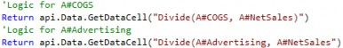
While this approach would work, it would be terribly inefficient and not maintenance-friendly. Every new Account added to the Report would need a corresponding dynamic Calc written for it. Since each Account is using the exact same logic, there is a better way!
Storing the formula in a Member of another Dimension allows the Calculation to inherit the Account defined in the row of the Report, and eliminates the need to write a separate Calculation for each Account.
The logic could be stored in any Dimension but (as mentioned above) UD8 is often picked since it is the least used. This allows the Calculation to work with any Dimension in the row of the Report.
There may be a need to see a similar Report with Product or Cost Center in the rows. By storing the formula in a UD8 Member, any Dimension (other than UD8) could be used.
The logic for the UD8 Calculation looks like this:
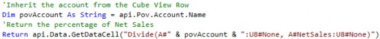
Declaring the POV Account and passing it into the formula is done to increase the readability of the formula but isn’t necessary as it happens automatically. The below formula would also work:
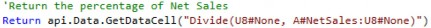
The UD8 Member is called in the Cube View column.
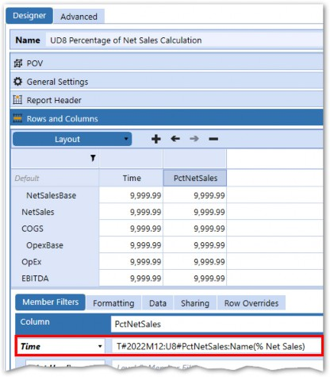
Figure 5.23
Reporting Calculations › Use of UD8 › UD8 Example
UD8#None
You may have noticed UD8#None in each of the Member Scripts. Without specifying the UD8 Member, the formula would try to inherit the UD8#PctNetSales Member from our Cube View column definition – creating a recursive reference. The error message below would occur.
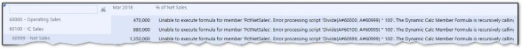
Figure 5.24
If a UD8 Dimension is assigned to the Cube, replace None with whatever the top Member of the hierarchy is named.
Reporting Calculations
Referencing Other Dynamic Calcs
A dynamically calculated Member can be referenced in the formula of another dynamically calculated Member.
For example, let’s say we create a dynamic Calculation Account to calculate Total Sales excluding Intercompany Sales.
Account: OpExExclRD
Return api.Data.GetDataCell("A#OperatingExpenses - A#ResearchDevelopment")
| Note: This type of Calculation could also be accomplished via an alternate Account hierarchy utilizing Aggregation weights to subtract A#ResearchDevelopment from A#OperatingExpenses. |
This Account can now be used in the formula of another dynamic Calculation. Let’s create another calculated Account that refers to the OpExExclRD Account.
Account: OpExExclRDandSalaries
Return api.Data.GetDataCell("A#OpExExclRD - A#Salaries")
Viewing both of these Accounts in a Cube View shows that one is able to reference the other. You will also notice that the percent of Net Sales UD8 dynamic Calc is also working on both Accounts.
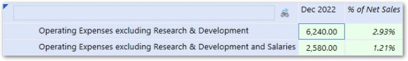
Figure 5.25
| Note: Since the UD8 dynamic Calculation is referenced in the column, it will run after the Account dynamic Calculations in the rows due to the order of operations in which Cube Views process. |
Reporting Calculations › Referencing Other Dynamic Calcs
Relational Blending
Relational Blending refers to blending data from a Cube with data outside of the Cube stored in relational tables. Dynamic Calculations can leverage Relational Blending API functions which can efficiently lookup values in relational tables using dimensional information from the Cube View, like Member names.
There are three main Methods of Relational Blending:
Drill-BackBlending(One-to-Many Relationship) – This Method of Relational Blending is used to provide access to detailed information that does not exist in the analytic model. This capability is delivered right out-of-the-box with its predefined drill back to Stage detail data. In addition, the Stage Integration Engine provides drill back and drill around capabilities against external data.
ApplicationBlending(One-to-Many Relationship) – This Method of Relational Blending leverages the OneStream MarketPlace Specialty Planning and Compliance applications. This collects information in a Transactional Register format and seamlessly maps/loads summarized data into an analytic model. These applications also provide predefined transactional-level Reports, as well as predefined drill back connectors, allowing drill down from a summarized analytic model to the detailed Register transaction data.
ModelBlending(One-to-One Relationship) – This Method of Relational Blending combines the power of the in-memory Analytic Engine with the flexibility of relational database storage. This functionality is provided as part of the Finance Engine API and can be integrated into dynamic Calculations to display relational data alongside data from the Cube.
Let’s go back to our Sales Report, which shows the product manager alongside the Product. In our previous example, the information was stored and maintained in text properties within the UD1 Member properties. For this example, the product manager information is contained right in the source data file, which is imported through Stage before being summarized and loaded to the Cube. This type of information is typically not loaded into the Cube as it is constantly changing and maintaining Dimensions to support it would be cumbersome and inefficient. This information is better kept in Stage or Custom tables, where it can be accessed using the Relational Blending API functions.
Reporting Calculations › Referencing Other Dynamic Calcs › Relational Blending
Stage Table
The Stage table is out-of-the-box functionality; the only configuration required is to enable a Text Attribute field in the Cube Properties.
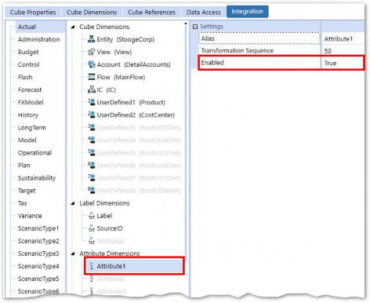
Figure 5.26
Attribute1 is populated in Stage from the source file.
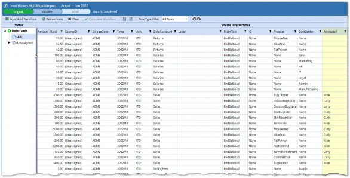
Figure 5.27
Dynamic Calculation Using GetStageBlendText Function
A Dynamic Calculation can now be written to look up the Attribute column of the Stage table based on the UD1 in the Report.
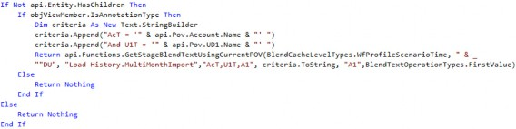
The above script will query the Stage table based on some defined criteria and return the Attribute1 column. The api.Functions.GetStageBlendTextUsingCurrentPOV function is used to query the Stage table in an efficient manner using criteria from the Cube View in which the function is called from. Using this function will ensure optimal performance as the table will be queried once and then stored in cache. After the initial query, all cell references will read from cache.
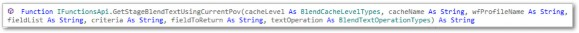
Figure 5.28
This function is all about efficiency and performance. Querying tables from a Dynamic Calculation is a dangerous endeavor due to the potential high processing time required. Remember that a Dynamic Calculation will run for every cell in a Cube View, Quick View, or other Report. If you query a large relational table 120 times for a simple 10 row, 12 column Report, you are going to have a bad time. This function eliminates that risk and provides parameters to operate as efficiently as possible. This means querying the table as few times as possible, storing the query result in memory (caching it), and referring back to the stored (cached) table instead of re-querying the table each time.
Let’s breakdown the function and the parameters which it requires.
Reporting Calculations › Referencing Other Dynamic Calcs › Relational Blending › Stage Table
CacheLevel
The CacheLevel is used to control the granularity of the cache. In other words, this controls how many times the table needs to be queried and the volume of records brought into cache. The BlendCacheLevelTypes enumerable can be used to view and set the options.
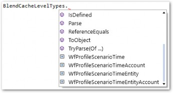
Figure 5.29
The option chosen here should align with the Cube View (or other reporting mechanism) in which it is used. If the Cube View only shows data for one Scenario, Time Period, Entity, and Account, then WFProfileScenarioTimeEntityAccount BlendCacheLevel should be used. The other options would also work but would be less efficient as more data is brought into cache than necessary; this will increase the time of the initial query as well as subsequent lookups of the cached data.
If multiple Accounts are shown in the Report, then WFProfileScenarioTimeEntity should be used. Conversely, using WFProfileScenarioTimeEntity when multiple Accounts are in the Cube View will mean that the table will be queried more times.In summary, choose the cache level that will minimize the number of queries to the table and result in data that is only required for the scope of the Report.
Reporting Calculations › Referencing Other Dynamic Calcs › Relational Blending › Stage Table
CacheName
A short name used to identify the values placed in the cache (Full CacheID will be CacheName + CacheLevel values). This name can be any string and should be different for each reference of this function within a Member Formula or Business Rule.
Reporting Calculations › Referencing Other Dynamic Calcs › Relational Blending › Stage Table
wfProfileName
Name of the import Workflow Profile containing the values to be looked up. (Pass an empty string to look up the Workflow based on the POV Entity; use *.YourWFSuffix to get all Workflow Profiles with the specified suffix.)
Reporting Calculations › Referencing Other Dynamic Calcs › Relational Blending › Stage Table
FieldList
List of Stage table fields that will be used as criteria and/or returned. To view the column names of the Stage table, go to the Database page within the System tab and navigate to the various Stage tables.
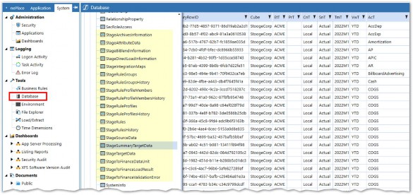
Figure 5.30
Reporting Calculations › Referencing Other Dynamic Calcs › Relational Blending › Stage Table
Criteria
Criteria statement used to select rows in the cached data table. A StringBuilder is used to build the criteria string. This will be like a SQL Where Clause with the ‘Where’ omitted. The Where clause used in the example will include the Product and Account from the Cube View.
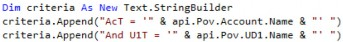
Reporting Calculations › Referencing Other Dynamic Calcs › Relational Blending › Stage Table
FieldToReturn
Name of the Stage field to return. Our example will return the field from the Attribute1 column, so A1 is used. This can be seen in the StageAttributeData table.
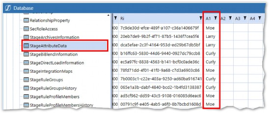
Figure 5.31
Reporting Calculations › Referencing Other Dynamic Calcs › Relational Blending
Results
The full script is stored in a UD8 Member and referenced in a Cube View with the V#Annotation
Member.
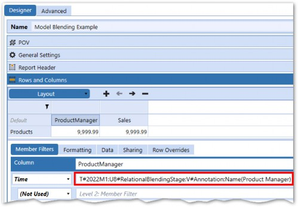
Figure 5.32
The results should mirror the earlier Product Report with the names now pulled from Stage instead of UD1 Member properties.
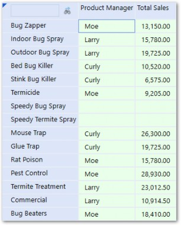
Figure 5.33
Reporting Calculations › Referencing Other Dynamic Calcs › Relational Blending
Other Variations
Other GetStageBlend functions exist for different purposes. They all behave similarly to the example described above. Refer to the OneStream Design and Reference Guide for more information about them.
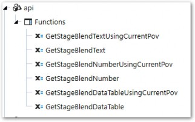
Figure 5.34
Reporting Calculations
General Guidelines and Tips
Reporting Calculations › General Guidelines and Tips
Aggregation
Only stored data aggregates within Dimension hierarchies, so Dynamic Calculations will not naturally aggregate to Parent Members. For example, a Parent Account with two Dynamic Calculation Children will not display the aggregated total of both Calculations.
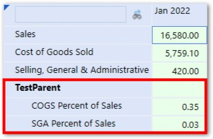
Figure 5.35
The above figure shows two dynamically calculated ratio Accounts rolling up to a Parent Account. The Parent Account does not aggregate the two ratios… which wouldn’t make much sense anyway. Instead, a Dynamic Calculation can be written directly on the TestParent Account. The formula logic will add COGS and SGA together and divide the result by Sales to get a new ratio.
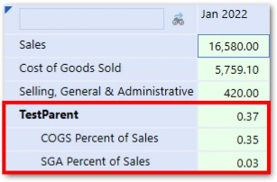
Figure 5.36
Reporting Calculations › General Guidelines and Tips
Alternate Hierarchies
For simple addition and subtraction, alternate hierarchies within Dimensions can also achieve the same result as a Dynamic Calculation and should be used when possible. The earlier example, where a Dynamic Calculation was used to calculate operating expenses excluding research & development, would have been better as an alternate hierarchy.
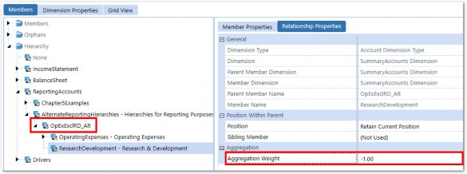
Figure 5.37
The above is achieved by creating a new Account with OperatingExpenses and ResearchDevelopment as Children. The Aggregation weight of ResearchDevelopment is set to -1 to subtract it from Operating Expense. This Method will perform better, be easier to maintain, and more transparent to End Users because it will be drillable.
Reporting Calculations › General Guidelines and Tips
Complement Stored Calculations
Dynamic Calculations can be written to mirror the logic of stored Calculations that will run as part of the DUCS or as Custom Calculate. They can be included on data entry Forms to give Users immediate feedback as to the result of inputs.
Reporting Calculations › General Guidelines and Tips
Test on Small Report
If you have a large Cube View or Report that returns hundreds of data cells, it is a good idea to test Dynamic Calculations on a smaller Report to increase speed and avoid server overload if the Calculations result in an error or error logging is enabled.
Reporting Calculations
Conclusion
Not all calculated data needs to be stored in the Cube. For Calculations that are needed to support reporting, Dynamic Calcs are much more flexible and forgiving than stored Calculations. They can run within the dimensional context of the Report that they are called from, and run completely in memory. They also afford the ability to return text from Dimension properties or relational tables, which can enhance reporting. Use Dynamic Calculations whenever possible as they should be a part of every project’s holistic Calculation build.